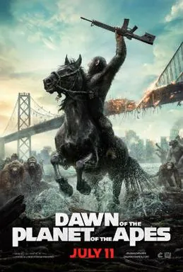

The genetics
The genetics lies in the backstory of the series. In Rise of the Planet of the Apes, a scientist at the company Gen-Sys developed the virus ALZ-113 as a treatment for Alzheimer's disease; tested on apes, it raised their intelligence, while in humans it became the deadly Simian Flu, from which only about one person in 500 is genetically immune. This film shows the consequences: civilisation has collapsed and the apes Caesar leads are a new intelligent species. The scientist, Will Rodman, appears only in home videos that Caesar watches with tenderness, and the film does not dwell on blame. Laboratory research shapes the conflict in another way: Koba's hatred of humans comes from the experiments he suffered, and it is he who drives the apes to war. The drama is about leadership, trust and violence more than science.
How genetics is portrayed
- Overall portrayal of genetics
- negative Laboratory genetic work set off a pandemic that destroyed civilisation and created the ape-human conflict, and the film ends on the eve of war.
- Outcome of the genetic intervention
- negative The lab-made virus has killed most of humanity, and the experiments on apes left Koba with the hatred that starts the war, even though the enhanced apes have built a society.
- Will Rodman and Gen-Sys
- ambivalent Aim: benevolent, commercial (positive). In the backstory, Rodman at Gen-Sys created the ALZ-113 virus to cure Alzheimer's, which enhanced apes and caused the pandemic; Dawn shows him only fondly in Caesar's home videos while living with the catastrophe his work caused.
The story
Ten years after the Simian Flu has wiped out most of humanity, the intelligent chimpanzee Caesar leads a thriving ape community in the forests north of San Francisco. A group of human survivors led by Malcolm enters ape territory to repair a hydroelectric dam that could restore power to their settlement in the ruined city, and a panicking member of the group shoots a young ape. Caesar lets the humans work on the dam if they surrender their weapons, and Malcolm's family, including Ellie, a former CDC nurse who treats Caesar's sick wife, begins to build trust. But Koba, a bonobo scarred by years of laboratory abuse, discovers the humans' armoury, shoots Caesar, blames the humans and leads the apes to war. Caesar, nursed by Malcolm's family, returns and defeats Koba, but the human leader Dreyfus has already called in the military, and Caesar prepares his apes for the coming war.